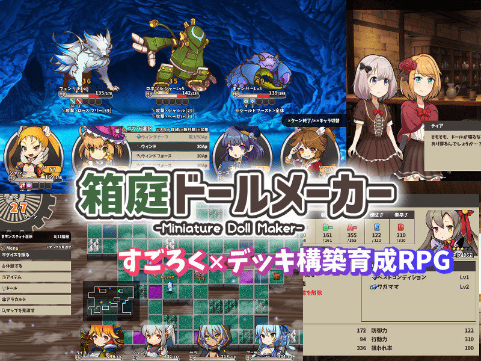
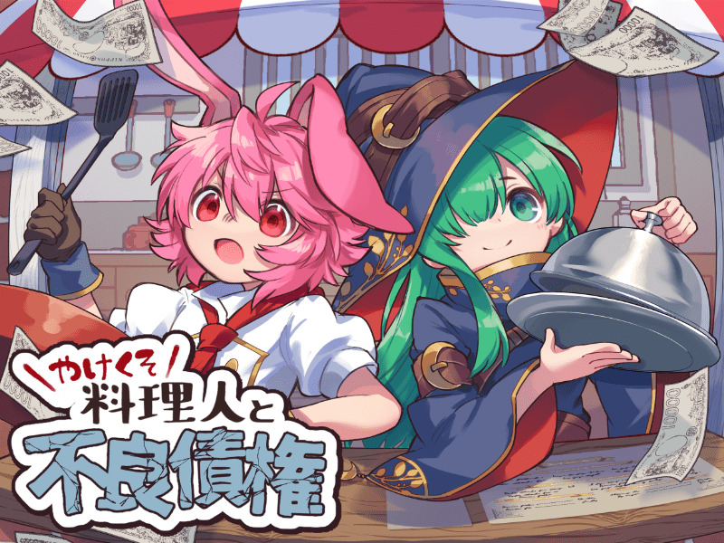
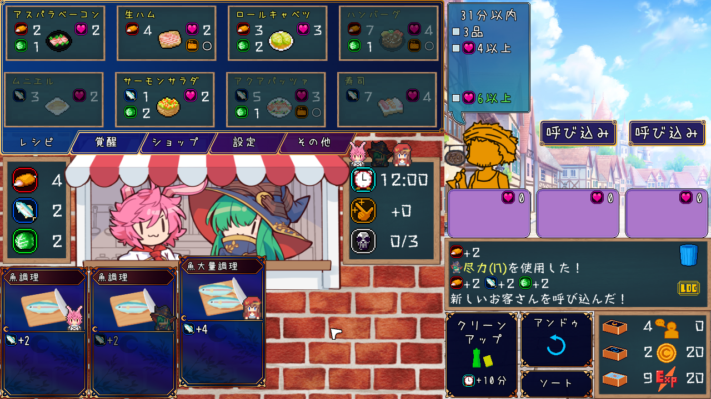
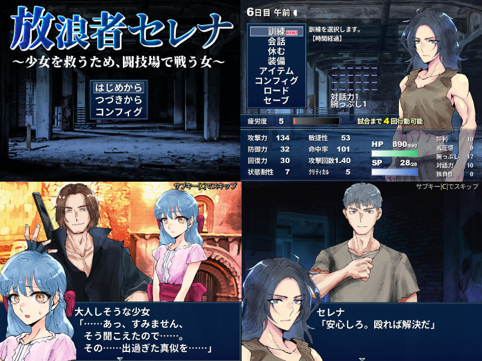
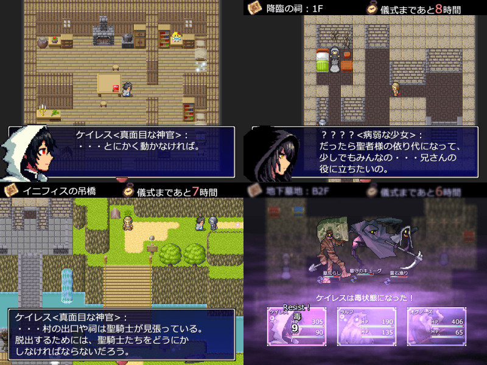

■2024-08-25 (日) 第16回ウディコン結果発表、上位作品+ピックアップ紹介！▼
今回の作品群も例年以上に情熱と工夫がいっぱいで凄い回となったと思います！
この記事では上位4位までの作品と、個人的ピックアップをご紹介します！
【第16回ウディコンページ】

◆第16回ウディコン1～4位紹介！
【第１位 『箱庭ドールメーカー』】
作者：こよる様 ↑タイトルクリックで作品へ
熱中 42.0点(1位)+斬新 25.9点(3位)+物語性 27.0点(6位)+画像音声 24.7点(4位)+遊びやすさ34.1点(5位)+その他23.0点(3位) = 176.7点

『箱庭ドールメーカー』は、「ドール」と呼ばれる存在を育成し
ダンジョンを攻略していくすごろく×デッキ構築育成RPGです！
マップ探索はすごろく式で行われ、遭遇する敵との戦闘で
ドールのパラメータを上げたり、特定の宝箱から得られるスキルを集めて
スキルデッキを構築していきます。
スキルは1ドールあたり10枠まで習得可能で、
戦闘中ではそのうちの4択が初期選択肢として出てきます。
スキルを使うとデッキ中の他のスキルがでてきます。
バトルでは最大4人のパーティーを組めるため、
各々の相乗効果を考えてスキルを取ったりしていく必要があります！
バトルはAP式で、APがなくなるまで1ターンに何度でも行動可能！
仲間内での行動順も自由！
そしてこのゲームの変わっているところが
「育成（ダンジョン）」と「本番（フィールド）」パートの2つに分かれいる点！
「育成（ダンジョン）」パートでは1つのドールを育てることができ、
パーティーに入れられる残りの3体は自動で成長していきます。
そして終了時、育成対象にしたドール1体を「記憶」することができます。
そして「本番（フィールド）」パートでは、
「記憶」したドールを4人連れて冒険に行くことができます。
「育成」パートクリア時点のスキルを全員最初から持っているほか、
最初は能力値が弱めですが冒険途中でレベルアップすると
最大で「育成パートで育てた値」まで能力値が強くなっていきます。
そしてそのステージのボスに挑むわけですね！
スキルは単体で非常に強力なものも多いですが、
組み合わせることで敵を完封できたり、
超絶大ダメージを与えられるようになるものもあり、
習得できるスキルの端々を見ながら
「この相乗効果を完成させたら絶対強いだろうなあ！」
という夢を持つこともしばしば！ その夢を叶えるために夢中で育成できてしまいます！
こんな風にドールを鍛え、「習得」も「戦闘時の使用」もある程度
運任せになるスキル群をうまくやりくりしながら
「強力すぎるシナジー」を生み出してゲームを進めるという流れが非常に楽しく、
何十時間でもやれそうな中毒性があります！
（個人的には可処分時間の不足によりリソース確保と後半の育成にかかる時間がもう少し短めでも
うれしかったですが、それを支払う価値がある面白さでした）
しかもX(Twitter)で共有されているパーティー構成を見ると
使ってるパーティーがみんな違っていてそこもすごい！
自分の思いつく構成を突き詰めればどれも強いバランスがすばらしい！
他にも戦闘パートの工夫として面白いのが「状態スロット」！
これは各キャラ5枠あるのですが、敵が何らかの強化状態になっても、
後から状態異常を5つ重ねると「先にかかった状態を押し出して消せる」
という仕組みが導入されており、これもRPGの強敵戦で
出番がなくなりがちな状態異常に役割を増やしています！
「味方に致命的な状態異常をもらっても強化状態を5つかければその悪状態を消せる」
という意味もあるので、バフ・デバフの在り方の重みが強い！
これうちでも採用したいです！
などなど話すべき工夫は山ほどありますが、
これ以上言うと長くなりすぎるので、後述の開発者さまの記事などもぜひご覧ください！
本作はプレイ時間が10時間以上と長かった都合上、
審査終了あたりまで投票が少なかったのですが、
いざ終盤に投票され始めると最終結果としては
熱中度1位の中央値9点（つまり半数以上が9点以上を入れた）だった上に、
「熱中度に10点入れても足りないので『その他』加点もしました！」という人も続出！
画像音声や遊びやすさも高めで物語も印象に残るものとなっており、隙がありません。
「ウディコンではプレイ時間が長いゲームは不利」とみんなに思われていた中、
その壁を打ち破ってトップになるほどの超絶パワー！ 1位も納得の一作です！
そして開発者さまの裏話の記事も出されていました！
ゲームデザインにあたっての試行錯誤の記録や参考にしたシステムが
記されていて勉強になりましたので、よければぜひ！
→ ◆フリーゲーム「箱庭ドールメーカー」制作後記
【第２位 『やけくそ料理人と不良債権』】
作者：なす太郎様 ↑タイトルクリックで作品へ
熱中 40.4点(2位)+斬新 24.8点(4位)+物語性 20.8点(11位)+画像音声 26.8点(3位)+遊びやすさ37.9点(2位)+その他18.0点(7位) = 168.7点

『やけくそ料理人と不良債権』は、お料理デッキ構築ローグライク！
なんと敵と戦うのでなく、手札で料理を作ってそれを提供していくというゲームです！

「料理を作って客を呼んで提供する」という流れが
1画面にまとまっている画面構成も分かりやすい！
基本的には手札を使うことで「肉」「魚」「野菜」の各食材を増やし、
その食材で選べる「料理」を作って客に提供していきます。
客は自分で「呼び込む」こともできるので、
「あっ、このターン料理が余っちゃうな、客を呼んでおくか」みたいな判断もできます！
ですが料理には「おいしさ」や「映え」のパラメータがあり、
客も「ロールキャベツが食べたい」とか「映え2以上で」などの注文を出してくるので、
要望を満たすように料理を出さねばなりません。
お寿司とハンバーグは注文しないでくださぁぁぁーい！！
（デッキが強まってないと作るのが大変）
カードは途中で新たなものを取得していけるのですが、
カードには「キャラ」のアイコンが載っています。
特別なことがない限り、各キャラごとに1ターン1枚しか手札が使えません。
たとえば「BB（ピンク髪ウサギ男子）」アイコンのカードを使うと、
そのターンはBBの他のカードは使えなくなります。
なので別キャラのカードを得ることで1ターンに
いっぱい手札を出せるようにしたり、引いた時点で
「手札+1枚」を得られる（負担にならない）パッシブ的なカードを
取っていくことで有利にしたりと、デッキ強化にあたって
いろいろな観点で考えながら進めていく必要があります！
この辺り、実際やってみると予想以上に直感的なので、ぜひ触ってみてください。
詳しい情報が知りたいときは右クリックで！
また、キャラクターたちの会話も楽しく、そういった面の面白さも高品質！
料理作りをテーマにしたデッキ構築ローグライトとして
非常に高い完成度で構成されており、
ゲーム開発者的に「これは巧い！」とうならされた一本です！
「遊びやすさ」部門でも上位で、たぶん1プレイ1時間くらいで遊べると思いますので、
気になる方はぜひ遊んでみてください！
【第３位 『迷宮郷まよろば』】
作者：そぞろ豆腐様 ↑タイトルクリックで作品へ
熱中 39.6点(4位)+斬新 19.9点(10位)+物語性 12.0点(21位)+画像音声 29.5点(1位)+遊びやすさ37.1点(3位)+その他25.0点(1位) = 163.2点
『迷宮郷まよろば』は、心をゆさぶる美麗ドット絵と音声がかなでる
圧倒的雰囲気が魅力のゲームです！
実際に遊んでみると画面からの「圧」がすごいんですよ！
日本の懐かしい風景、メルヘン、大自然、ホラー、ポップ、仏教感などなど
幅広いジャンルのマップを探索していくのですが、
ウディタ3の新機能も演出に多用されていて細かな演出までこだわりぬかれており、
ひたすら「美しい……！」としかいいようのない場面が次々に出てきます！
私は仏像が不思議と印象に残りました。
なお、マップには隠し要素や収集要素もちりばめられており、
それを探す楽しみもあります。
（コンプリートは大変かもですが、実現できれば
「全てを見尽くした」という証明になるでしょう！）
最初は未知のエリアをうろうろする感じですが、
「全体マップ」を入手できたらその後は「観光」感覚になって遊びのフェイズが変わります。
「全体マップ」は体感、かなり後半のエリアに
急にポッと置いてありましたので、忙しい人はなるべく早めに、
そうでない人はぜひ楽しみながら探してみてください。
プレイとしてはほとんどの時間は歩いているだけなのに、
どんどん出てくる新たな絵と音に心が揺さぶられ、
歩いているだけで「良い体験ができた」と感じられてしまう
ものすごいパワーを秘めている一作！
「ぜひ自分の目で確かめてください！」と私でも言ってしまう作品です！
【第４位 『放浪者セレナ～少女を救うため、闘技場で戦う女～』】
作者：カザ＆ソロー様 ↑タイトルクリックで作品へ
熱中 40.4点(2位)+斬新 12.9点(17位)+物語性 27.0点(6位)+画像音声 21.4点(10位)+遊びやすさ39.4点(1位)+その他19.5点(5位) = 160.8点

『放浪者セレナ～少女を救うため、闘技場で戦う女～』は、
闘技場で育成して戦いに勝ち抜いていく育成シミュレーションゲームです！
少女を救うべくセレナという女性が闘技場に潜入するのですが、
そこで大人向けゲーム的なグヘヘ展開があるかとまったくそんなことはなく、
非常に健全かつ爽やかに進みます！
お子様にも安心！（セレナさんの腹筋は刺激的かもしれない）
ゲーム面においては、通常難易度は非常に遊びやすく、
変に育成で休みまくったりしない限りは割と敵に勝っていける感じに
絶妙にバランス調整されています。
また、育てたパラメータや選択肢に応じて色んな技や装備品を入手できたりして、
育成面で色々試したい気持ちになれる一本です！
私は高攻撃力で連続攻撃をいっぱいしたーい！
が、そのメインの育成&バトルパートと並行して、
本作は「会話パート」が非常に面白いんですよ！
選択肢によって主人公セレナの方向性が変わり、エンドに影響したり、
キャラの反応がどんどん変わったりして、
会話部分でも周回して色々試したくなってしまうのです！
会話の面白さに関しては私がとても好きなセンスだったので、
そう聞いて興味を持たれた方はぜひ遊んでみてください。
コメディ的だったり考えさせられる内容だったり、
あるいはセレナさんが変だったりして、見ていて楽しいですよ！
とにかく遊びやすく、リプレイを重ねて色んな面で楽しめる一作なので、
「難しいデッキ構築ゲームはあまりできないよ～」という方でも安心です！
ちなみにハードモードはだいぶ骨がありそうなので、
ゲーム的なチャレンジをしたい人も安心！
幅広い人に楽しんでもらえそうな一作で、「遊びやすさ」部門1位も納得の品質です！
また、こちらの作者さまもシステム・バランス面の制作秘話が記事で語られています！
これも明確な意図を持ってバランス調整しているところが非常に勉強になったので、
気になる方はよければぜひ！
「どんな遊び方でもちゃんと楽しめる」ようにするのにも、
裏には大変な苦労と試行錯誤があります！
→◆放浪者セレナ制作秘話（システム・バランス担当ver） (ｱｰｶｲﾌﾞ)
(追記)さらにシナリオ・グラフィック・UI担当の方の
制作話も語られていました！ こちらにもしっかりと意図があります！
→◆放浪者セレナ制作話 ソロー版 (ｱｰｶｲﾌﾞ)
◆ピックアップ紹介！
そしてこちらは順位にかかわらず、今回の個人的お気に入り作品をご紹介します！
【第12位 『Inifis』】
作者：逃げ足様 ↑タイトルクリックで作品へ
熱中 29.3点(11位)+斬新 10.8点(21位)+物語性 28.9点(3位)+画像音声 8.0点(--)+遊びやすさ32.6点(7位)+その他6.5点(24位) = 116.2点

『Inifis』は時間制限がある中、聖者の依り代にされてしまいそうな
<彼女>を助けるために奮闘するマルチエンドRPG！
影響を受けた作品があるとのことですが、
本作はとても面白く一本の作品としてまとめられています！
どこが私にとって良かったかというと、
●移動や行動次第で時間がなくなっていく中、
効率を考えて行動するのが大好きなのでとてもツボでした！
●幸が薄そうな妹（…？）もかわいい！ ツボです！
●不穏すぎる断片情報が次々出てくる！ ツボです！
●いきなり「○す」はヤバいですよケイレス（主人公）さん！ ツボです！
●マルチエンド要素！ ツボです！
●周回時の親切要素も充実！ 最高ッ！
という点で私の感性にとてもヒットしました！
逃亡時に邪魔になりそうという理由ほかで「住人を殺害する」という選択肢が
早々に出てくるくらい真面目な主人公ケイレス氏ですが、
それが行動の自由度や過激さを産んでいてアツい！
探索の中でだんだん「裏事情」が分かってくる気持ちよさも楽しく、
物語性部門で3位を獲得されたのも納得です！
上記の好きポイントが一致する方にはぜひおすすめしたい一作です！
そしてこの他にも、
7位『魔王復活物語』で
「こういう方向性のゲームとして完成度が高くて謎解きが楽しいぃぃ！
ラストの謎解き解けたときのカタルシスがヤバいぃぃぃ！
（ただし一部謎解きが超難しくて私でも助けなしだと
諦めてたレベルなのでその点はご注意）」となってたり
9位『ラピッドスティール３』に
「すげえええフル合成音声ボイスだけど違和感がないぃぃぃぃ
立ち絵もボスすごい動くぅぅぅシューティングパートも遊びやすいぃぃぃ
楽しいぃどうやって作ってるんだこれぇぇぇ！」ってなってたり
10位『水底の記憶』に
「うおおおアニメーションすごいいい射的パーフェクト取ったぁぁぁ
そして話が心に残るぅぅぅよかったねぇぇぇ！」となったり
11位『ジャンクエデン2』に
「うおおおおお（某あのゲーム的な）ロボゲーでパーツドロップをランダムにして
オープンワールドにしたらたぶんこんなプレイ感になるのかぁぁぁ
体験してみたかったやつだぁぁぁ楽しぃぃ！」となったり
20位『鶏空を舞う』で
「こういうシューティングもありなんだぁぁぁ
普通のゲームと意識しどころが違ってて楽しいぃぃぃぃ！
（※敵の射程ギリギリを維持して相手の弾をいったん尽きさせた後、
接近してこちらの攻撃で敵を落とすという間合い管理が重要なSTG）」となったり
35位『デモクラシア演義』で
「全体的に生々しい選挙体験だぁぁぁというか支持する候補を
当選させるための選挙運動ってあまりに地道すぎて大変だぁぁぁぁ
でも実際こうなんだろうなぁぁぁぬあああサライさん負けたぁぁぁー！
けど他候補が当選しても政治は続くぅぅぅなるほどぉぉぉ！」
みたいな、私にとって特に思い出に残る作品がたくさんありました！
ということで、今回ご紹介させていただいた作品はどれも面白いのでぜひ遊んでみてください！
特に上位12作品は、どれを遊んでも印象に残る一本になると思います。
何なら順位が付いている作品全部が印象に残りますし
順位外でも面白いのがいっぱいあります！
そう、前回もそうでしたが、今回は順位外のゲームでも
「これが順位外なの！？」という作品がいっぱい！
結果発表ページには部門別順位や一般投票コメントなども
掲載されていますので、それらも参考にしつつ、
気になる作品があればぜひ触ってみてください！
たとえば新しいゲームに触れてみたい人は「斬新さ」部門を、
キャラクターや記憶に残る物語を楽しみたい人は「物語性」部門がおすすめです！
【ウディコンページへ】
◆次回、第17回について
ウディコンは来年2025年の『第17回』も開催予定で、すでにスケジュールも決定済みです！
私が無事なら確実に開催しますので、皆さまの作品、楽しみにお待ちしております！
昨今はフリーゲームに関して、色んなゲームコンテストが終了していたり、
投稿先が減ったりしていることもあって、
いつも通りにウディコンをやってるだけでも、
ちょっとだけ「砂漠の中のオアシス」的な存在になりつつあるような感触もあります。
もしかしたらウディコンの役割が重くなっていっている部分も
あるのかもしれませんが、今後も引き続き、私が面白いと感じる限りは
いつも通りのウディコンを続けさせていただこうと思っております！
ウディタでゲームを作ろうとしてくださる誰かにとっての目標になれていれば幸いですね！
それでは、第16回ウディコンに関わってくださった
全ての関係者の皆さま、今年も本当にありがとうございました！
よければ来年の夏もぜひ、遊びに来ていただけますと幸いです！
2024-08-25 (日)  カテゴリ: ウディタ
カテゴリ: ウディタ
 カテゴリ: ウディタ
カテゴリ: ウディタ